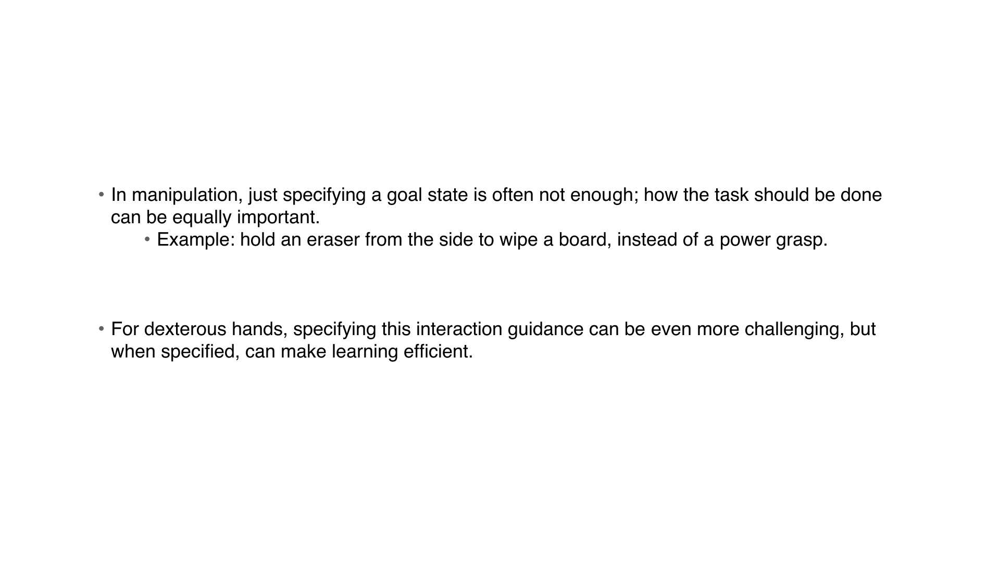
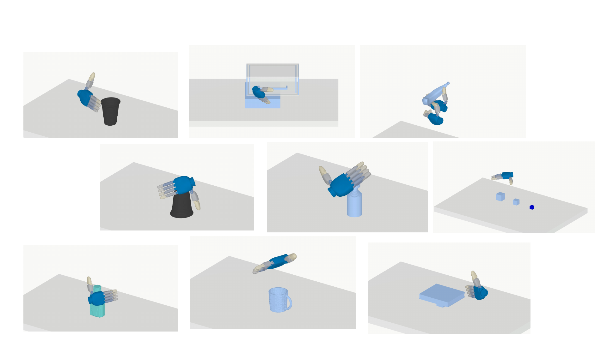
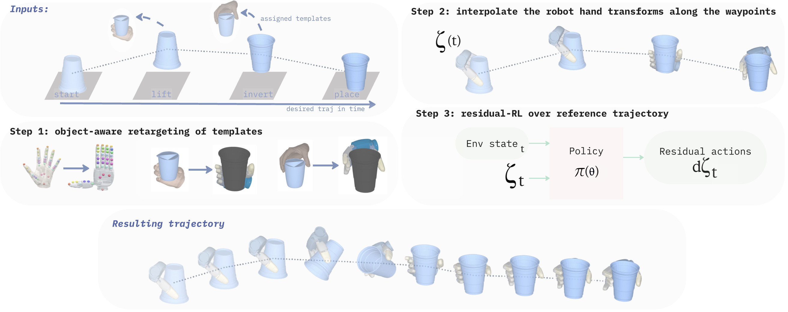
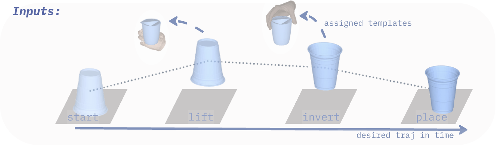
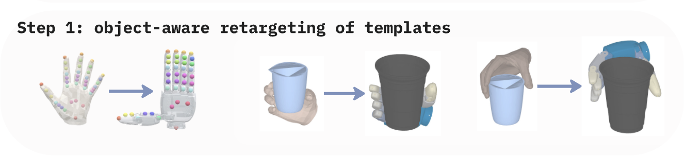
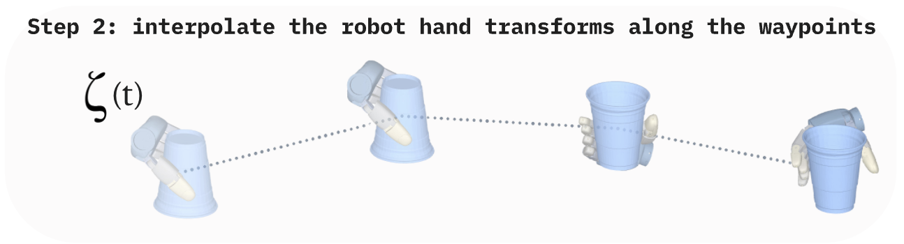
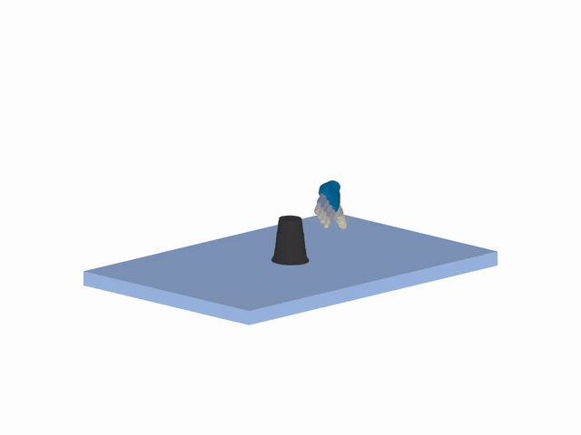
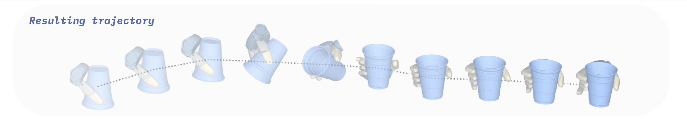
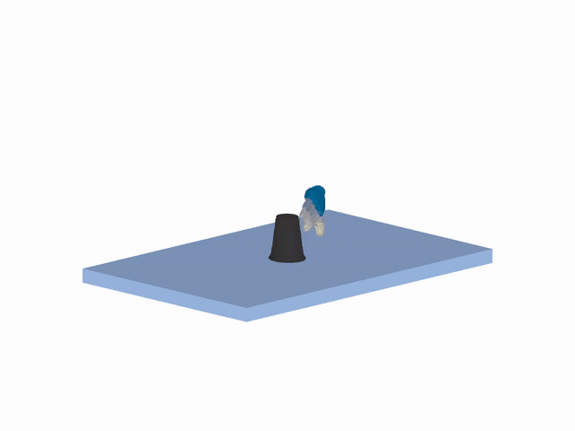

Prior Works:
- Dense hand–object trajectories provide low-level detailed task guidance, but they are tied to specific tasks and objects.
- Hand-only pose priors are easier to reuse, but they do not specify the hand–object interaction to achieve.
- We want a middle-ground task representation: reusable across objects and tasks, but still informative about how the hand should interact with the object.
DexLink
- We use hand–object interaction templates: a template captures how a hand interacts with an object or object part.
- It can specify the intended grasp, contact region, and hand orientation.
- Templates can be reused across object instances and even across related object categories.

Grasp Change: DexLink allows fine-grained specification of low-level behavior
Long Horizon: DexLink allows efficient long-horizon task learning
Bimanual: DexLink extends to bimanual manipulation
DexLink

Task Specification and Object-Aware Retargeting
Object-state waypoints specify the desired task progression. Interaction templates are assigned independently at selected waypoints and retargeted to the robot hand and target object.


Reference Trajectory Construction
The retargeted robot hand transforms are interpolated along the object-state waypoints to construct an approximate kinematic reference.


Residual RL Refinement
A residual policy refines the approximate reference into a physically grounded closed-loop trajectory.

